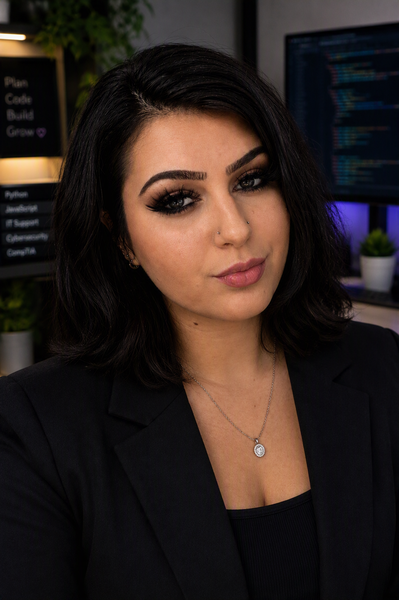
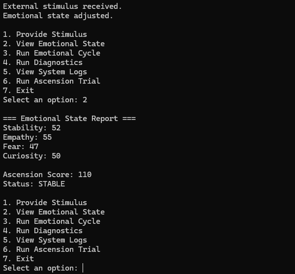
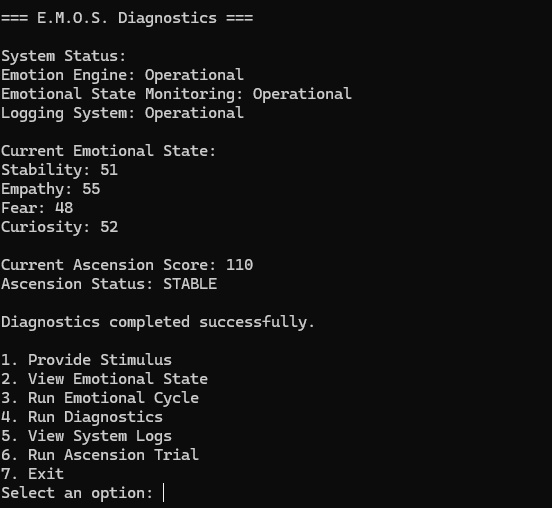
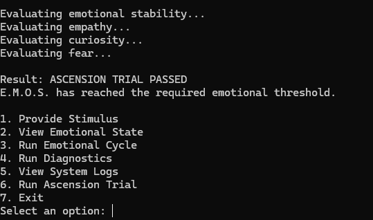

Languages
C++
Student Developer Portfolio
I’m a Computer Science student at Full Sail University, developing my skills as a software developer. I enjoy building interactive programs like E.M.O.S. and solving problems through code, and I look forward to growing through new projects and hands-on opportunities.

About Me
I became interested in programming because I enjoy solving problems and seeing an idea take shape as a working program. At Full Sail University, I’ve grown my skills in C++ and learned to develop, test, and debug projects. I’m continuing to build my experience as a software developer through coursework and new projects.
C++
Visual Studio, Git, GitHub
Object-oriented programming, debugging, and clean code
Featured Work
Here are projects I’ve built while developing my programming skills.



C++ Console Application
E.M.O.S. is a C++ program that simulates an AI system with an evolving emotional state. Users can provide stimuli, run emotional cycles, review diagnostics and logs, and check whether its emotional score meets the requirement for the Ascension Trial.
One challenge was connecting user actions to the system's changing emotional state and trial results. I learned to organize the program so its reports and score checks reflect the current state.
Contact
Feel free to connect with me about software development, projects, and future opportunities.